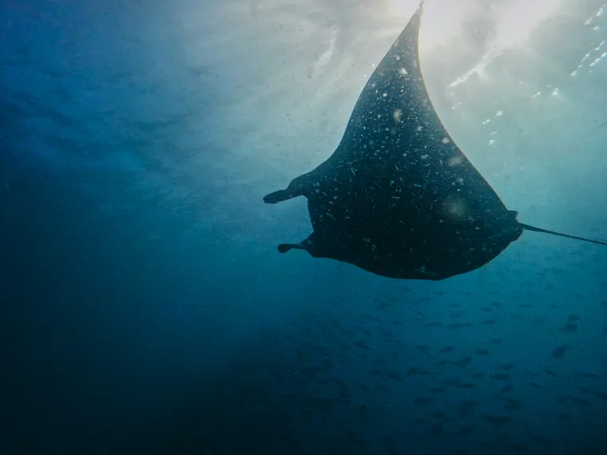
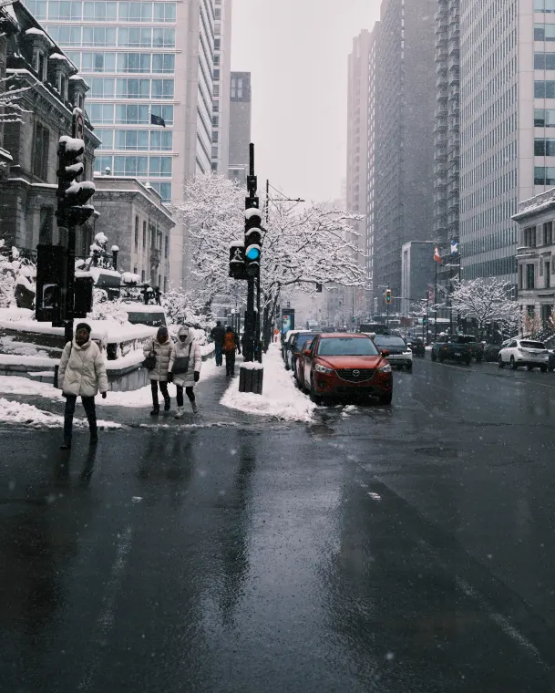
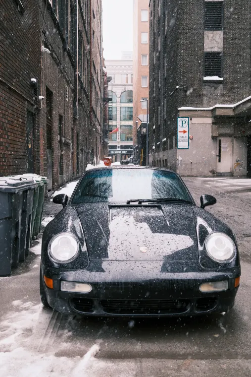

Milky Way — ValaisAstrophotography
Ski touring — AiglonAlpine & Skiing


Star trailsAstrophotography
Summit at dawnAlpine & Skiing
Lake, long exposureTravels
Diver silhouetteUnderwater
Aurora borealisAstrophotography

Powder dayAlpine & Skiing
Coral, macroUnderwater
Orion nebulaAstrophotography
Coastline at duskTravels